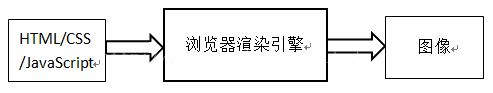
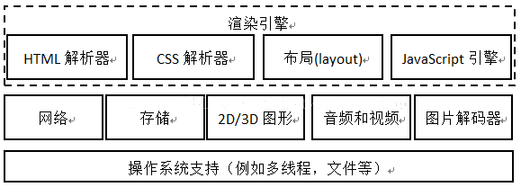
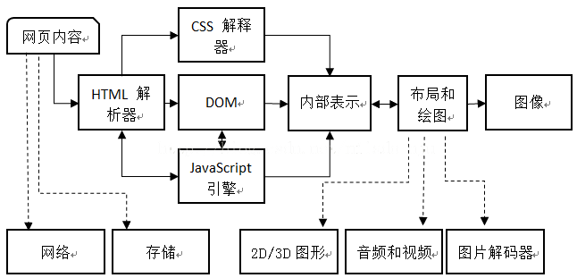

页面渲染概念
浏览器渲染引擎的主要目的就是从一个网页的URL开始，经过一系列的复杂处理过程之后，变成一个可视化的结果，这一过程就是这里所说的页面渲染的基本过程。
所谓的渲染，就是根据描述或者定义构建数学模型，通过模型生成图像的过程。浏览器的渲染引擎就是能够将HTML/CSS/JavaScript转换成图像结果的模块，如下图所示，输入是URL对应的各种资源，输出是可视化的图像。从这里看，非常的简单和容易理解。

浏览器渲染引擎
那么渲染引擎提供了哪些功能模块来支持页面渲染的呢？下图是一个渲染引擎所包含的基本功能和它们依赖的一些第三方库。

从图中大致可以看出，一个渲染引擎大致包括HTML解释器，CSS解释器，布局和JavaScript引擎。下面依次来描述它们：
HTML解释器：解释HTML语言的解释器，本质是将HTML文本解释成DOM（文档对象模型）树。
CSS解释器：解释样式表的解释器，其作用是将DOM中的各个元素对象加上样式信息，从而为计算最后结果的布局提供依据。
布局：DOM之后，需要将其中的元素对象同样式信息结合起来，计算它们的大小位置等布局信息，形成一个能够表示这所有信息的内部表示模型。
JavaScript引擎：JavaScript可以修改网页的内容，也能修改CSS的信息，JavaScript引擎解释JavaScript代码并把代码的逻辑和对DOM和CSS的改动信息应用到布局中去，从而改变渲染的结果。
这些模块依赖很多其他的基础模块，这其中包括网络，存储，2D/3D图形，音频视频和图片解码器等。实际上，渲染引擎中还应该包括如何使用这些依赖模块的部分，这部分的工作其实并不少，因为需要使用它们来高效的渲染网页。例如，利用2D/3D图形库来实现高性能的网页绘制和网页的3D渲染，这个实现非常非常的复杂。最后，当然，在最下面，依然少不了操作系统的支持，例如线程支持，文件支持等等。
页面渲染基本过程
绘制(painting)
- 根据HTML代码形成文档对象模型（DOM）。
- 加载并解析样式，形成CSS对象模型。
- 在文档对象模型和CSS对象模型之上，创建一棵由一组待生成渲染的对象组成的渲染树（在Webkit中这些对象被称为渲染器或渲染对象，而在Gecko中称之为“frame”。）渲染树反映了文档对象模型的结构，但是不包含诸如标签或含有display:none属性的不可见元素。在渲染树中，每一段文本字符串都表现为独立的渲染器。每一个渲染对象都包含与之对应的DOM对象，或者文本块，还加上计算过的样式。换言之，渲染树是一个文档对象模型的直观展示。
- 对渲染树上的每个元素，计算它的坐标，称之为布局。浏览器采用一种流方法，布局一个元素只需通过一次，但是表格元素需要通过多次。
- 渲染树上的元素最终展示在浏览器里，这一过程称为绘制(painting)。
- 当用户与网页交互，或者脚本程序改动修改网页时，前文提到的一些操作将会重复执行，因为网页的内在结构已经发生了改变。
重绘(repaint)
当改变那些不会影响元素在网页中的位置的元素样式时，譬如background-color(背景色)， border-color(边框色)， visibility(可见性)，浏览器只会用新的样式将元素重绘一次(这就是重绘，或者说重新构造样式)。
重排(reflow)
当改变影响到文本内容或结构，或者元素位置时，重排或者说重新布局就会发生。这些改变通常由以下事件触发：
- DOM操作（元素添加、删除、修改或者元素顺序的改变）；
- 内容变化，包括表单域内的文本改变；
- CSS属性的计算或改变；
- 添加或删除样式表；
- 更改“类”的属性；
- 浏览器窗口的操作（缩放，滚动）；
- 伪类激活（悬停）。
渲染引擎核心过程
下面就是这些模块如何组织以达成渲染过程的。一般地，一个典型的渲染过程下图所示，这是渲染引擎的核心过程，

下面逐个从左至右来解释上图中的这一过程。这一过程的先后关系由图中的实线箭头表示。左上角开始，首先是网页内容，送到HTML解释器。HTML解释器在解释它后形成DOM树，中间如果遇到JavaScript代码则交给JavaScript引擎去处理。如果页面包含CSS，则交给CSS解释器去解析。当DOM建立的时候，接受来自CSS解释的样式信息，构建一个新的内部绘图模型。该模型由布局模块计算模型内部的各个元素的位置和大小信息，最后由绘图模块完成从该模型到图像的绘制。
最后解释图中虚线箭头的指向含义。它们表示在渲染过程中，每个阶段可能使用到的其他模块。在网页内容的下载中，需要使用到网络和存储，这个是显而易见地。但计算布局和绘图的时候，需要使用2D/3D的图形模块，同时因为要生成最后的可视化结果，这时候需要开始解码音频视频和图片，同其它内容一起绘制到最后的图像中。
在渲染完成之后，用户可能需要跟渲染的结果进行交互，或者网页自身有动画，一般而言，这会持续的重新渲染过程。这个过程跟上面类似，不再赘述。
document.ready和window.onload事件
doucument.ready事件由jQuery包装处理，在DOM结构加载完毕(不含图片、CSS等资源)之后触发。
window.onload事件为原生JS事件，在DOM结构完全加载完毕(包含图片、CSS等资源)之后触发。
显而易见，document.ready事件早于window.onload事件。以下是一个例子，便于对其的理解。代码如下：